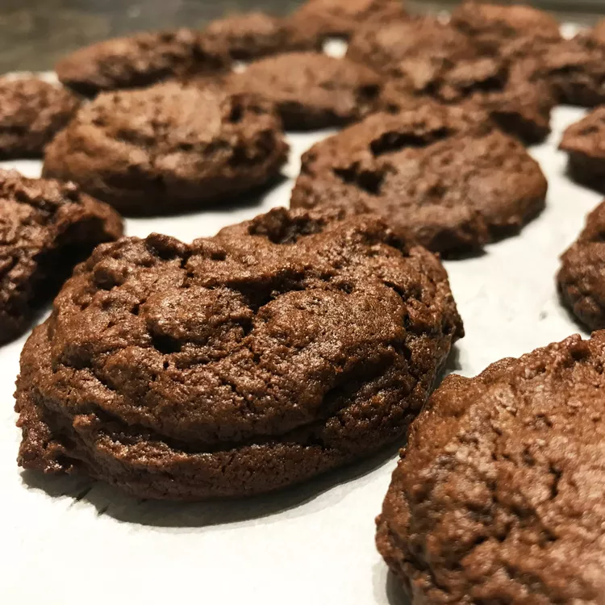

Ingredient List:
| Ingredient |
Amount |
| Sugar |
2 cups |
| Margarine, softened |
1 ¼ |
| Large eggs |
2 |
| Vanilla |
2 teaspoons |
| All-purpose flour |
2 cups |
| Unsweetened cocoa powder |
¾ cup |
| Baking sode |
1 teaspoon |
| Salt |
⅛ teaspoon |
| Chopped walnuts |
1 cup |
Instructions:
- Step: Preheat the oven to 350 degrees F (175 degrees C).
- Step: Cream sugar and margarine in a large bowl until light and fluffy. Beat in eggs, one at a time, then stir in vanilla.
- Step: Combine flour, cocoa, baking soda, and salt in a separate bowl. Add to the creamed mixture and mix until just blended. Stir in walnuts. Drop spoonfuls of dough 2 inches apart onto ungreased cookie sheets.
- Step: Bake in the preheated oven until edges are set and centers are soft, 8 to 10 minutes. Let sit briefly before transferring to wire racks to cool completely.